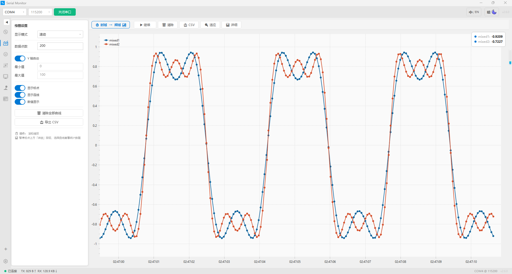
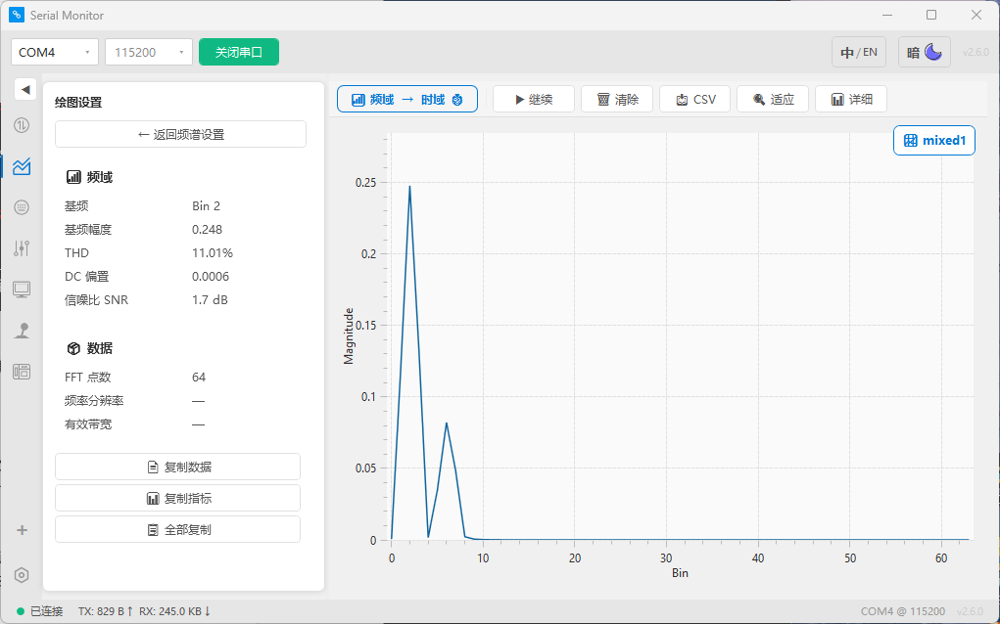
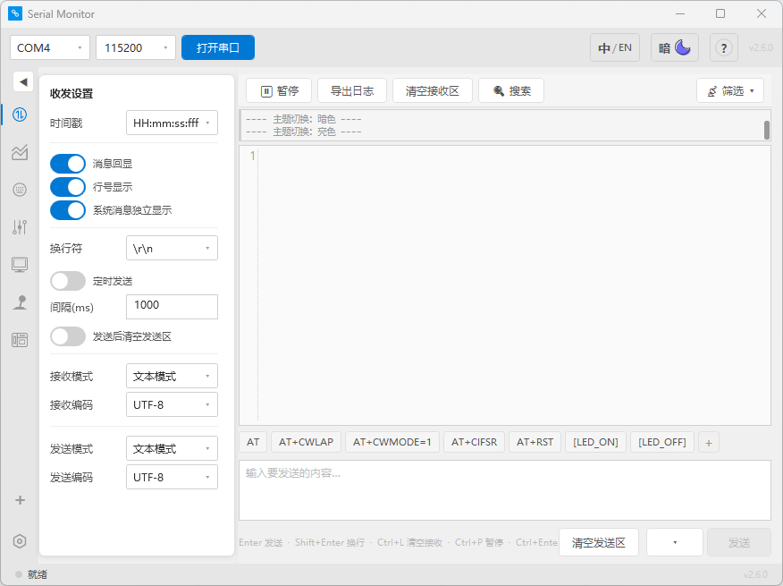
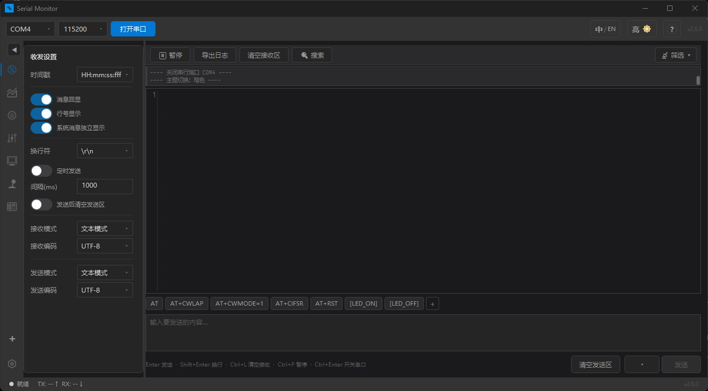
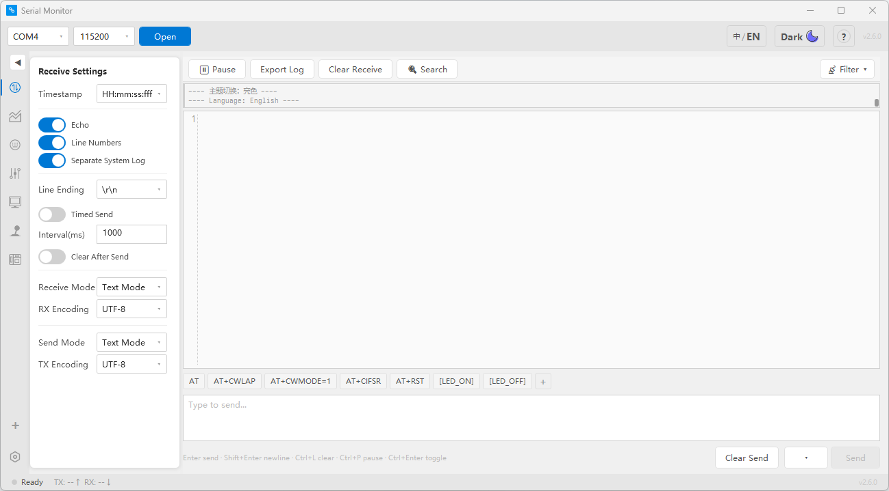

看看实际效果




基于 WPF + OxyPlot + AvalonEdit 的串口调试工具
STM32 端配套 C 库，扔进工程即用

收发区、波形图、FFT 频谱、传感面板、按键、滑杆、摇杆、OLED 绘图——一个软件全搞定。
STM32 发一行 [sensor,temp,芯片,42.5]，PC 端自动建卡。协议自动路由，通道名即图例。
PC 端拖滑杆、点开关、画图形 → 协议实时发回 MCU → 操作硬件。不是单向监视器。
仅 2 个文件（Serial.c + Serial.h），零依赖零 malloc，扔进 CubeMX 工程即可。
~550 条翻译一键瞬切。21 色 DynamicResource 原地变色不闪烁。
三个致命路径全 try-catch 保护。崩溃日志自动写入。USB 热插拔自动检测 + 自动重连。
协议格式统一为 [type,参数...]。PC 端根据 type 自动路由到对应面板，无需任何配置。
AvalonEdit 虚拟化渲染
三色日志 + HEX/文本双模
OxyPlot 实时曲线
时域/频域一键切换
[plot,ch1,25.3]PC 端自动 FFT
STM32 端零改动
[fft,name,256,bin0,...]8 类卡片零配置建卡
双向控制 + 心跳检测
[sensor,temp,芯片,42.5]6 种键盘布局
40 色自定义
[key,KEY1,on]拖拽节流发送
自定义颜色轨道
[slider,kp,0.85]双轴控制
3 种风格 + 自定义素材
[joystick,1,50,-30,0,0]11 种绘图指令
F5 增量同步
[draw,circle,64,32,20,#FFF]

不是"能跑就行"——每个交互都认真想过。
VS Code 风格三栏布局、暗色主题、扁平化设计。嵌入式开发者一眼就能上手。

仿 VS Code Dark+ 配色，21 色 DynamicResource 原地变色不闪烁。从 VS Code 切过来零学习成本——深色背景、蓝色强调、绿色状态灯，肌肉记忆完全复用。

~550 条翻译全覆盖，中英一键瞬切。ComboBox、系统日志、协议预览、错误提示——全线英文覆盖。GitHub README 双语，STM32 C 库文档双语。